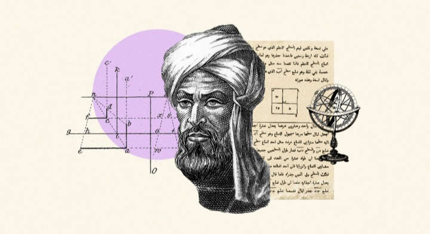
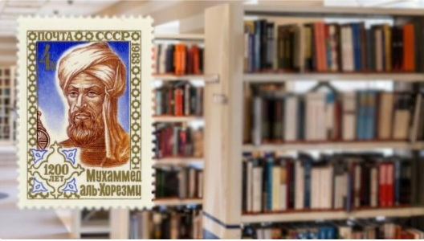

Bapak ilmuan muslim yaitu: Al-khawarizmi
sang jenius penemu konsep matematika yaitu: Al-jabar
apa yang pertama kali di pikiranmu ketika mendengar "matematika"? mungkin beragam. tapi, terkadang ya pelajar di indonesia, banyak menganggap matematika adalah ilmu yang rumit , dan sangat susah untuk dipelajari dan bahkan terkadang, entah berguna untuk apa. matematika selalu menjadi mata pelajaran yang yang sangat tidak disukai oleh pelajar di indonesia. padahal secara prinsip matematika adalah sebuh metode dalam berpikir dan bernalar Dengan matematika, manusia dapat memutuskan suatu ide benar atau salah. matematika juga digambarkan sebagai pelajaran pola, yang merupakan sejenis keteraturan baik dalam bentuk maupun ide, dan pola, telah mnejadi bagian penting dalam perkembangan ilmu sains
kalau kita telisik dari zaman ke zaman, sepanjang sejarah peradaban manusia, matematika selalu menjadi bagian penting dalam munculnya prinsip-prinsip sains baru. mulai dari teknologi komputer, Astronomi, strategi perang dll selain menggunakan Matematika sebagai dasar bentuk polanya.
sebagai ilmu yang sangat tidak disukai dan sangat menakutkan untuk kita dengar, matematika justru semakin menarik untuk dicari tau asal asulnya, lalu bagaimana ia berperan dalam peradaban umat manusia oleh karena itu, di artikel ini saya akan memperkenalkan dengan ilmuan Muslim yang selalu kita patut kita banggakan yaitu Al-Khwarizmi yang merupakan bapak matematikan dunia Ilmuan muslim penemu Aljabar dan angka 0. tidak hanya itu, Al khawarizmi juga yang asal-usul serta kegunaan angka 1 sampai 9 dalam kitabnya yang berjudul The book of addition and subtraction by the method of calculation of the Hindus
Dan bukanya hanya matematika, di saat ini perkembangan teknologi komputer seperti halnya aliran air di sungai yang terus mengalir tanpa henti. kamu mungkin sudah menyadarinya. setiap waktu ada saja munculnya teknologi baru yang semakin maju dan canggih. dan kemajuan teknologi ini tidak terlepas dari perkembangan berbagai disiplin ilmu pengetahuan di masa sebelumnya yang menjadi dasar teknologi kedepanya. dan karna berkat beliau perkembangan teknologi di bidang komputer terutama.
Biografi Al-Khawarizmi

Al-Khawarizmi memiliki nama lengkap Muhammad ibnu Musa Al-khawarizmi, sedangkan di negara-negara barat Al khwarizmi dikenal denagn sebutan Al goritmi, Al gorismi, Al cowarizmi, dan sebutan dengan ejaan lainnya.Al khawarizmi lahir sekitar tahun 780 M di khawarizmia sekarang(Khiva, Uzbekistan) dan beliau juga kadang disebut juga sebagai "Bapak Algoritma" dan "Bapak Aljabar" dan juga beliau ahli dalam Matematika,Astronomi,geografi, mengenalkan sistem angka Hindu-Arab(termasuk angka nol) ke dunia barat. keluarga beliau merupakan turunan persia yang telah menetap di khawarizm, namun dari beberapa cacatan sejarah diketahui bahwa beliau ketika kecil pindah bersama keluarganya ke selatan Baghdad, sehingga di sinilah beliau meniti karirnya sebagai seorang Matematikawan
Beliau diperkirakan hidup pada masa Khalifah abbasiyah Al-ma'mun Al-Mu'tashim dan Al-wastiq yang dikenal sebagai masa keemasan ilmu pengetahuan di daerah arab berkat translasi buku dan ilmu pengetahuan ke dalam bahasa arab. pada masa itu terdapat Bait Al-hikmah yang menjadi pusat penelitian, penerjemahan buku ke dalam bahasa arab, dan juga publikasi ilmu pengetahuan yang dilakukan oleh para cendekiawan muslim tak terkecuali Al-khawarizmi.
Al Khawarizmi bergabung bersama cendekiawan lain di Bait Al-Hikmah ketika berusia 20 tahun. semasa hidupnya beliau bekerja di sekolah kehormatan yang didirikan oleh Khalifah Al-Ma'mun. Di sanalah beliau banyak menulis berbagai gagasan dan mempublikasikan buku ilmu pengetahuan baik di bidang matematika, astronomi,sejarah maupun geografi, termasuk memperlajari terjemahan literatur sansekerta dan yunani.
Dan pada akhirnya beliau diperkirakan wafat pada dan semasa hidup beliau juga karyanya tidak seputar bidang matematika saja, namun banyak bidang dari ilmu pengetahuan yang ikut terpengaruh dari hasil pemikirannya tersebut seperti contohnya pada Bidang geografiyang menyempurnakan peta ptomeleus dalam karya yang berjudul Kitab surat al-ard dan menurut Paul Gallez:
"hal ini sangat bermanfaat untuk menentukan posisi kita dalam kondisi buruk."
semasa hidupnya, Al-khawarizmi terus mengabdi dalam pendidikan dan juga riset keilmuan. hal itu membuatnya sangat terbuka pada sumber-sumber ilmu pengetahuan dari manapun, baik itu yunani,india, bahkan romawi.memang Al-khawarizmi banyak memberikan pengaruh terhadap perkembangan ilmu pengetahuan dunia hingga saat ini.
Al kitab al muhtasar
fii hisaab
al jabr wa'l
muqabaala
Buku pertamanya, Al kitab Al muhtasar fii hisaab Aljabr wa'l muqabaala, adalah buku pertama yang membahas solusi dari Persamaan linear dan Persamaan Kuadrat. sehingga ia disebut dengan Bapak Al jabar .kata Al jabar berasal dari kata al-Jabr, satu dari dua operasi dalam matematika untuk menyelesaikan notasi Kuadrat, yang tercantum dalam bukunya.sehingga ia disebut sebagai bapak aljabar. Al Khawarizmi juga berperan penting dalam memperkenalkan angka arabmelalui karya Kitab al-jam'a wa-l-tafriq bi-hisab al-Hindi yang kelak diadopsi sebagai angka standar yang dipakai di berbagai bahasa serta kemudian diperkenalkan sebagai sistem penomoran posisi desimal Di dunia barat pada abad ke- 12. ia merevisi dan menyusuaikan geografi Ptolemeus sebaik mengerjakan tulisan-tulisan tentang astronomi dan astrologi.
Hasil pemikiraan beliau dalam buku Al-jabar diangap sebagai revolusi besar dalam bidang matematika. Beliau berhasil mengintegrasikan konsep-konsep geometri dari matematika yunani kuno ke dalam konsep matematika yang baru. pemikirinnya menghasilkan sebuah teori gabungan yang memungkinkan bilangan rasional , irasional, dan besaran-besaran geometri.
Karya/ kontribusi utama beliau
Beberapa sumbangsih atau kontribusi beliau semasa hidupnya :
- Aljabar:
- karyanya Al-kitab al-mukhtasar fi Hisab al-jabr wal-Muqabala
(Buku ringkas tentang perhitungan dengan Aljabr dan pengimbangan)
menjadi dasar aljabar modern,dengan kata "Aljabar" berasal dari judul bukunya. - Algoritma & Angka Hindu-Arab:
- Mempopulerkan sistem angka india (0,1,2,3,...) termasuk angka
nol
ke Eropa melalui terjemahan latin dari bukunya
De numero indorum,yang melahirkan istilah "Algoritma"
dari namanya (Algorismi). - Astronomi:
- Menyusun tabel Astronomi berdasarkan sumber hindu dan yunani,
serta berpartisipasi dalam proyek penentuan keliling bumi. - Geografi:
- Menyempurnakan peta dunia Ptolemeus
dalam karyanya Kitab surat Al-Ard(Buku gambaran bumi).
Karya lainya:
Beberapa manuskrip Arab di Berlin,Istanbul,Tashkend,Kairo dan Paris berisi pendekatan material yang berkemungkinan bersal dari Al-Khawarizmi. manuskrip di istanbul berisi tentang sundial, yag disebut dalam fihirst. karya lain, seperti determinasi arah Mekkah adalah salah satu Astronomi sferik. Dua karya berisi tentang pagi (Ma'rifat sa'at al-mashriq fi kull balad) dan determinasi Azimut dari tinggi (ma'arifat al-samt min qibal al-irtifa).
Beliau juga menulis juga 2 buku tentang penggunaan dan perakitan Astrolab. ibnu al-nadim dalam kitab al-fhirist (sebuah indeks dari bahasa arab) juga menyebutkan Kitab ar-rukama(t)(buku sundial) dan Kitab Al-Tarikh (buku sejarah) tetapi 2 yang terakhir disebut telah hilang. tanpa penemuan Al-khawarizmi di bidang aljabar dan algoritma, dunia teknologi modern termasuk komputer dan smartphone yang kita gunakan saat ini mungkin tidak akan perna ada.
Tabel penemuan Al-khawarizmi
bentuk penghormatan kepada beliau.
hasil pemikira beliau ini yang akhirnya membuat manusia sangat terbantu di masa modern ini contoh Al-jabar dianggap sebagai revolusi besar dalam Bidang matematika. beliau berhasil mengintegrasikan konsep-konsep geometri dari Matetmatika Yunani ke dalam konsep matematika yang baru. berkat pemikirannya ini Aljabar sangat membantu peradaban manusia pada Abad ke-21 ini dan seterusnya akan digunakan. Dan selain itu Matematika Biner yang digunakan dalam pemrogramman didasari juga oleh konsep Algoritma Al-Khawarizmi. perkembangan yang semakin maju bagi komputer digital dan pemrogrammannya tak terlepas dari pemikiran beliau yang menjadi gerbang kemajuan.
Dan masih banyak lagi karya-karya beliau semasa hidupnya yang mempengaruhi ilmu pengetahuan saat ini. selain ahli matematika Al-khawarizmi juga ahli geografi, ahli astronomi, ahli strologi ahli sejarah bahkan teori mengenai seni musik dan lukis yang beliau tuliskan dalam bukunya. beliau merupakan sosok yang cerdas dalam berbagai bidang dan menjadi cerminan identitas muslim yang sesungguhnya.sebagai seorang muslim kamu seharusnya bangga sekaligus dapat menjadi cambuk bagi kamu yang sering bermalas-malasan atau kaum yang suka rebahan.
Nah berdasarkan Tabel penemuan dibawah ini kamu bisa belajar salah satu penemuan yang penting itu. melalui karya tersebut kamu dapat diingat dan dikenang dan untuk bisa seperti itu kamu harus punya kemampuandan Skil yang merupakan buah dari proses belajar. nah dibawah ini ada beberapa penemuan dari beliau yang sudah saya buat tabel dibawah ini agar para pembaca saya mudah untuk melihat penemuan tanpa saya harus jelaskan dengan panjang.
| No. | Bidang | Penemuan | ||
|---|---|---|---|---|
| 1 | Matematika | Aljabar,Angka 0 & Algoritma | ||
| 2 | Astronomi: | Tabel astronomi (Zil al-sindhind)& Astrolab | ||
| 3 | Geografi: | Peta dunia (memperbaiki peta Ptolemeus) & Koordinat | ||
| penemuan beliau ini sangat berpengaruh pada peradaban islam | ||||
Dan karyanya inilah menjadi fondasi penting dalam berbagai bidang ilmu seperti matematika, fisika, dan teknik serta menjadi dasar komputasi modern sampai saat ini baik dalam pemrogramman dll. memang penemuan beliau ini sangat berpengaruh ya hingga sekarang seperti Algoritma yang digunakan dalam dunia pemrogramman agar bisa / masalah dengan Logis, dan Aljabar juga sangat diperlukan dalam Geometri dan Kalkulus dan penetuan titik koordinat memang banyak sekali ya penemuan beliau dan sangat berguna pada zaman modern ini.ditambah lagi dengan karyanya ini dapat membantu jika kalian Berprofesi sebagai programmer atau developer tentunya Algoritma ini sering kamu gunakan saat dalam Pengembangan web atau Aplikasi.
Mengenal lebih dekat beliau
memang Al-khawarizmi sangat berpengaruh besar pada perkembangan terhadap matematika,sains, dan teknologi didunia Islam dan Eropa hingga sekarang ini. Nah kalau anda ingin penjelasan singkat tentang beliau anda bisa melihat dari video yang saya ambil dari Youtube agar kamu mendapatkan informasi yang jelas dan kredibel, yuk langsung kita simak video yang saya ambil dari Thoughtlist, jadi kalau anda ingin meliahtnya lebih jelas, masuk saja ke Chanel yuotubnya. oke mari kita lihat.
Lihat video :
Kesimpulan:
tanpa penemuan sistematis Al-khawarizmi, perkembangan sains, navigasi, hingga teknologi digital modern seperti yang kita kenal di Zaman modern ini tidak akan pernah terjadi.seperti, AI yang kita gunakan sehari-hari atau aplikasi yang kita pakai, dan bukan hanya itu Aljabar juga banyak digunakan dalam kehidupan sehari-hari seperti Menganalisi data,Mengembangkan teknologi, menghitung anggaran, dan Membuat keputusan. dan masih banyak lagi.
pelajaran yang dapat dipetik:
- Berpikir logis: Aljabar dapat membantu Mengembangkan kemampuan berpikir logis dan sistematis.
- Menganalis masalah:Alajabar memabantu menganalisis masalah dan mencari solusi.
- Kreatif:Alajabar dapat memabantu kamu untuk kreatif dan berpikir unik.
- Kesabaran:Aljabar membutuhkan kesabaran dan ketekunan untuk menyelesaikan masalah yang kompleks.
Apa selanjutnya ?
akhirnya selesai juga ya....
Dan disitu saja penjelasan yang bisa saya berikan dan semoga informasi yang saya berikan dapat menjadi ilmu yang bermanfaat bagi anda semuanya dan jangan lupa ya untuk selalu terus belajar dan melatih skill kamu ya agar kamu suatu hari nanti kamu menjadi orang yang hebat dan berguna bagi Nusa dan Bangsa. terima kasih dan sampai jumpa lagi, semoga anda sehat selalu ya.
jika anda ingin penjelasan yang lebih lengkap lagi, tapi tidak mau nonton videonya silahkan saja klik link berikut ini ya yang saya ambil dari Wikipedia wikipedia/Al-khawarizmi Dan selanjutya kalau kamu penasaran dengan Ilmuan muslim yang lain kamu bisa mencari di Google.